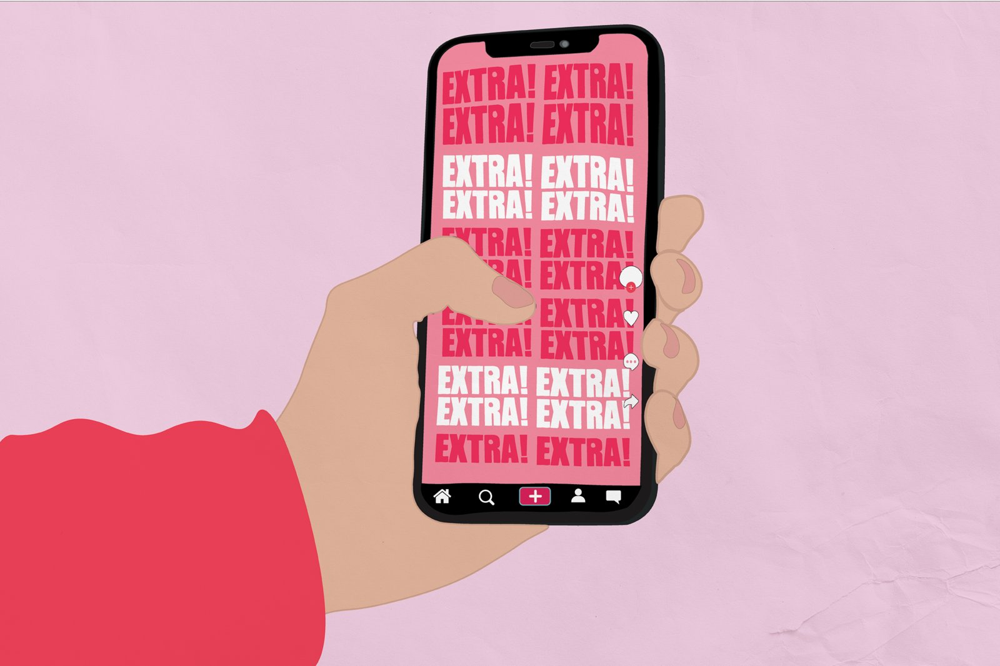
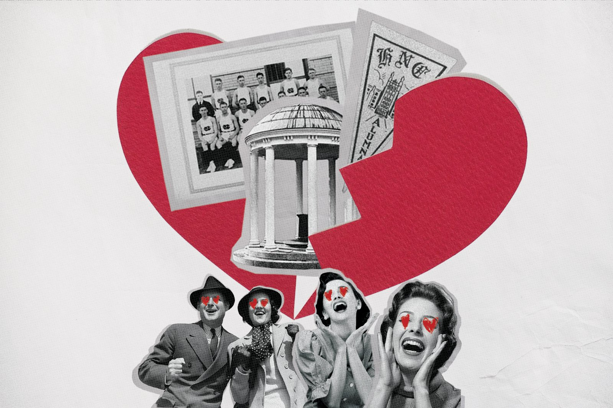

- Project:
- The Daily Tar Heel is the independent student newspaper at the University of North Carolina at Chapel Hill. The DTH has been serving the University and surrounding community since its founding on Feb. 23, 1893.
- Role:
- Designer

